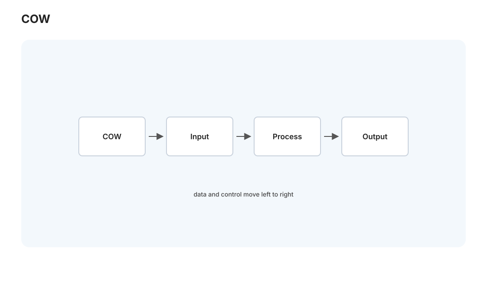
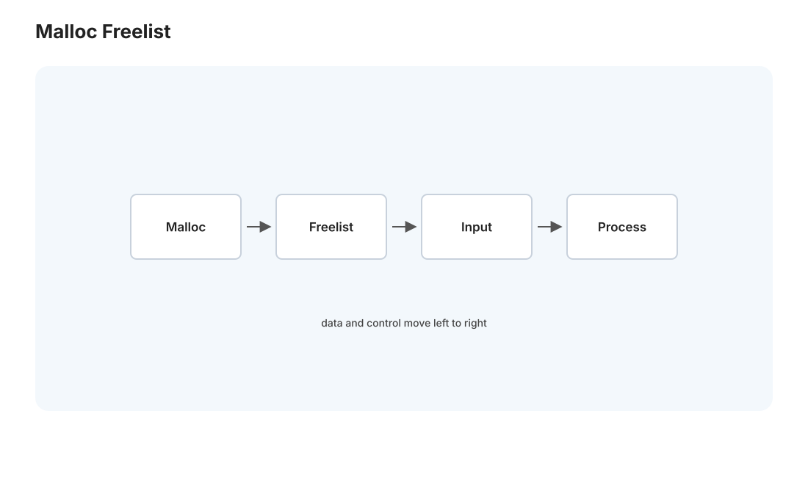

CSAPP IV · 虚拟内存与动态内存
对标：CS:APP 第 9 章 ｜ 前置：csapp-02（缓存）、csapp-03（缺页故障） 系统里最精巧的幻觉：每个进程都以为自己独占一整块从 0 开始的连续内存——而物理内存只有几十 GB 且被所有进程瓜分。这个幻觉叫虚拟内存，它同时解决了隔离、共享、超额分配三件事，是现代操作系统的支柱。下半页讲
malloc底下的真相——堆是怎么管理的，为什么会内存碎片和泄漏。
1. 虚拟内存：地址的一层间接
核心思想是计算机科学的万能咒语——加一层间接。程序用虚拟地址，硬件（MMU）+ 操作系统把它翻译成物理地址。这层翻译一举给了三样东西：
- 隔离：进程 A 的虚拟地址 0x1000 和进程 B 的 0x1000 映射到不同物理页——一个进程崩溃/越界碰不到另一个（安全与稳定的地基）。
- 超额分配：虚拟地址空间可以远大于物理内存——用不到的页不占物理内存，需要时才调入（按需分页）；物理内存不够时把冷页换到磁盘（交换 swap）。
- 共享：多个进程可映射同一物理页（共享库、
fork后的写时复制），省内存。
2. 分页与页表：翻译怎么做

内存按页（通常 4 KB）为单位管理。页表是"虚拟页号 → 物理页帧号"的映射表，每进程一份。虚拟地址 = [虚拟页号 | 页内偏移]，翻译时查页表得物理页帧，拼上偏移。
两个工程要点： - 多级页表：单层页表太大（64 位地址空间），故用多级（4 级）树形页表——只为用到的地址分配页表项，稀疏空间不浪费。 - TLB（翻译后备缓冲）：页表在内存里，每次访存都查页表等于访存翻倍——于是用 TLB 缓存最近的翻译（🔗 csapp-02 缓存思想的再一次应用）。TLB miss 是真实的性能因素，大页（huge page）就是为减少 TLB 压力。
按需分页的机制（🔗 csapp-03 缺页故障）：访问一个未在物理内存的页 → 触发缺页故障 → 内核找空闲页帧、从磁盘调入、更新页表、重试指令——程序全程无感。物理内存满时，用页面置换算法（LRU 近似，🔗 adv-02 在线算法的竞争分析正是分析它）挑一页换出。
写时复制（COW）：fork() 不真复制内存，父子共享所有页并标记只读；任一方写时才触发故障、复制那一页。"fork 很快"的秘密就在 COW——这也是为什么 Redis 存快照、Python multiprocessing 能高效 fork。
3. 动态内存：malloc 底下是什么

栈上的局部变量随函数进退自动管理；堆上的内存要显式 malloc/free——分配器要在一块大内存里，响应任意大小的请求、回收后重用。它是一个精巧的数据结构问题：
- 空闲块管理：把空闲内存组织成链表（显式空闲链表）或按大小分类（分离适配 segregated fit，glibc 的做法）。分配时找一个够大的块（首次适配 / 最佳适配），切一块给用户、余下留空闲。
- 回收与合并：
free后要把相邻空闲块合并（coalesce）成大块，否则碎片化。用边界标记（boundary tag）在块前后存大小，实现 O(1) 前后合并。 - 元数据：每块要记大小、是否空闲——所以
malloc(16)实际占用更多（头部 + 对齐）。
这就是 [实验 L03]：亲手写一个带首次适配 + 合并 + 边界标记的 malloc——写完你就再也不会把堆当黑盒。
4. 内存的两大灾难与工具
- 内存泄漏：
malloc了不free，长期运行进程内存持续涨（Medusa 这类 24/7 服务最怕）。 - 悬垂指针 / use-after-free / 二次释放 / 越界写：访问已释放或越界的内存——未定义行为，可能静默出错，也可能被攻击者利用（堆溢出，🔗 sec-01）。C/C++ 的内存 bug 是业界安全漏洞的最大单一来源（约 70%）。
这正是两条现代出路的动机：① 工具——valgrind/AddressSanitizer 运行时抓越界与泄漏（必学）；② 语言——Rust 用所有权在编译期消灭这类 bug（🔗 rust-01，你会看到本页所有灾难如何被类型系统提前拦下）。理解 C 的内存之痛，才能真正体会 Rust 所有权的价值——这是本站两条线的一个刻意呼应。
5. 练习与要点
例 1（虚拟地址翻译手算） 页大小 4 KB、虚拟地址 0x1234：页内偏移 0x234、虚拟页号 0x1——查页表得物理页帧再拼偏移。手翻一次地址，"分页"从名词变动词。
例 2（碎片的产生） 交替 malloc/free 不同大小的块，画出堆的空洞——理解外部碎片（空闲总量够但不连续）为什么让"内存还有很多却分配失败"。这是 [L03] 要对抗的敌人。
例 3（COW 验证） fork 一个占大内存的进程，观察系统内存不翻倍（top 看 RSS）——直到子进程写内存才涨。"fork 便宜"的机制亲眼可见。\(\blacksquare\)
▶ 实验 L03（显式空闲链表 malloc）：
labs/L03-malloc/—— 首次适配 + 边界标记合并 + 对齐，跑分配器压力测试测碎片率与吞吐。对标 CS:APP malloc lab。
CSAPP 四页到此完成——你已经把一行 C 从字节、缓存、链接、进程到虚拟内存看穿了。下一页进入操作系统 I：进程、线程与调度的原理层。